This chapter gives security and compliance reviewers a clearer map of the local-first model: what is touched, what is exported, and what needs a control.
Industry Solutions Whitepaper Series
This chapter builds on Part 1-5 and focuses on compliance readiness language. It is written for technical buyers, security reviewers, and governance owners who need evidence-backed rollout decisions.
Security review friction usually comes from vocabulary mismatch. Engineering teams discuss resource state and action closures. Auditors discuss controls, scope, and evidence integrity. Part 6 aligns these vocabularies so one decision object can satisfy both domains.
1) Trust boundary and data custody model
Local-first governance changes compliance posture because credential custody and runtime execution remain under operator control. In practical terms, cloud metadata retrieval and analysis run inside customer-managed boundary, not a third-party hosted control plane. This does not eliminate compliance obligations, but it changes the control surface reviewed in vendor and internal risk processes.
For security teams, the key questions are: where sensitive metadata is processed, who can access evidence exports, and how long records are retained. For procurement reviewers, the key question is whether custody assumptions are explicit and testable. A cloud governance framework should answer these questions with operating evidence, not marketing statements.
Local execution can reduce third-party data custody complexity, but only if operations are disciplined. Endpoint hardening, token management, and retention rules remain mandatory controls.
2) SOC2 support mapping (readiness posture)
SOC2 evaluations are principle-based, so mapping should focus on control intent and evidence quality. Governance operations typically map to these practical domains:
- Security: access control, authenticated API operations, and evidence integrity.
- Availability: deterministic scan outcomes, retry behavior, and operational monitoring.
- Confidentiality: controlled handling of exported findings and log artifacts.
- Processing integrity: stable policy evaluation logic and change traceability.
Part 2 and Part 3 controls become SOC2-ready when each finding closure carries owner, approver route, evidence reference, and validation timestamp. Without this chain, teams may execute correctly but still fail review because proof is fragmented.
3) ISO27001 alignment (control family view)
ISO27001 adoption often centers on policy completeness. Cloud governance execution also needs operational consistency. Use control families as the mapping unit:
- Asset and configuration control: finding taxonomy and service-boundary ownership map.
- Access and authorization control: risk-tiered approval routes and exception expiry.
- Operations security: scheduled scan cadence, deterministic failure classes, and remediation tracking.
- Supplier and change control: release-note evidence for policy and metric definition changes.
This mapping should live in a maintained appendix table with source links to docs baseline and release notes. A finops framework becomes auditable when its operational semantics are versioned and reviewable.
4) GDPR/region-sensitive considerations
For GDPR-sensitive organizations, the governance question is less about billing totals and more about metadata handling boundaries. Recommended controls:
- Document data categories involved in findings and exports.
- Constrain export recipients and retention windows by role.
- Separate operational evidence used for remediation from executive summary data used for planning.
- Keep policy for log redaction and exception tracking explicit.
Local-first execution can support data minimization objectives by limiting unnecessary transfer paths. Still, teams should explicitly classify what is retained for audit and what is removed after closure windows.

5) Evidence packet format for audits and buyer reviews
A compliance-facing evidence pack should be concise, reproducible, and role-aware. Minimum structure:
- Cover summary: period, scope, major finding classes, resolved/unresolved status.
- Control map: finding class to control family mapping and approver route.
- Execution proofs: action timestamps, validation references, rollback notes if relevant.
- Retention manifest: location, policy class, and disposal timeline.
This format helps beyond formal audits. It speeds enterprise procurement, legal review, and executive signoff because all parties read the same packaged truth.
6) Limits and careful claims
Part 6 provides compliance support mapping, not certification claims. Control implementation quality depends on team operations, environment boundaries, and release discipline. Avoid overstating outcomes as “automatic compliance.” A more accurate statement is: governance design supports readiness evidence for security and audit workflows.
For technical buyers, this distinction matters. Over-claims increase procurement risk and slow rollout. Precise claims accelerate review and improve trust.
7) Control walkthrough by evidence lifecycle
A practical compliance mapping should follow evidence lifecycle rather than document hierarchy. The lifecycle has five states: creation, review, action, verification, and retention. Each state requires one accountable role and one minimum artifact. For example, creation requires finding-class normalization and owner assignment; review requires approved risk lane and decision note; action requires execution timestamp and actor identity; verification requires post-change check result; retention requires storage policy and expiry marker.
When teams cannot trace artifacts across these states, they often overproduce documentation in one area and underproduce in another. This creates the illusion of maturity while increasing audit effort. Lifecycle mapping prevents that imbalance and keeps packet quality stable across teams.
For cloud governance framework evaluations, buyers should request one sample packet and test whether all five states are visible without external context. If reviewers must open multiple systems to reconstruct a basic decision chain, operational readiness is lower than it appears.
8) Statement discipline: validated vs inferred claims
To avoid marketing-style overstatement, every control claim should be tagged as validated or inferred.
- Validated: directly supported by product telemetry, release notes, or documented control behavior.
- Inferred: logical conclusion based on architecture and observed operations, pending direct measurement.
This distinction is important in enterprise reviews because it preserves technical credibility. Teams can accept inferred claims when assumptions are explicit. They reject unclear claims that sound absolute but lack evidence lineage.
Recommended practice is to include claim tags in compliance packet footnotes and maintain source references in a lightweight appendix table. This approach aligns engineering honesty with procurement expectations.
9) Security review lane design for faster approvals
Security teams are often overloaded. Governance programs should therefore route only meaningful risk events to security review. Low-risk operational actions can remain in engineering lanes if predefined conditions hold and sample review confirms control quality. Medium and high-risk actions should carry explicit review triggers.
Examples of useful triggers include large-scope network resource changes, exceptions older than one cycle, repeated control failures by class, and actions affecting region-sensitive data handling. This trigger model improves review focus and reduces approval fatigue.
In practice, organizations that adopt trigger-based review lanes reduce review queue noise while preserving compliance confidence. The result is faster operational closure and fewer emergency escalations near reporting deadlines.
10) Evidence governance ownership model
Evidence quality should have explicit ownership. A useful pattern is dual ownership: operations own evidence generation, governance owner owns evidence quality checks. This separation avoids conflict of interest while keeping responsibility clear.
Monthly sample audits should verify packet completeness, timestamp consistency, and control mapping integrity. Findings from sample audits should feed policy tuning in the next cycle. This closes the loop between compliance design and operational reality.
Without this quality function, evidence programs degrade gradually. Teams still execute remediation, but review readiness declines because artifacts become inconsistent across services.
Industry Pain Signals and Required Outcomes
SaaS and internet teams. Pain signal: security review questions arrive late in rollout. Required outcome: pre-mapped control evidence tied to release-time artifacts.
Fintech and payments. Pain signal: procurement and compliance ask for exact proof chain under tight timelines. Required outcome: custody boundary statements plus reproducible evidence packets.
Healthcare. Pain signal: uncertainty over metadata handling slows adoption. Required outcome: clear region-sensitive data handling and retention declarations.
Manufacturing and retail. Pain signal: inconsistent evidence quality across regional teams. Required outcome: common packet standard with monthly sample quality audit.
Implementation Checklist
- Publish one control-family mapping table linked to finding classes and approval lanes.
- Standardize evidence packs with control map, execution proofs, and retention manifest.
- Version KPI and policy semantics in release notes to preserve audit comparability.
- Define region-sensitive handling rules for exports and logs.
- Train operators on claim boundaries: readiness support vs formal certification.
Risks
- Evidence quality drift if packet templates are optional.
- Control ambiguity when exception expiry is not enforced.
- Review delays when policy semantics change without compatibility notes.
- Overstatement risk if readiness mapping is presented as certification status.
Next Decision
Proceed to Part 7 for procurement and selection matrix guidance: when to choose local-first, when to pair with SaaS partners, and how to structure boundary-fit procurement decisions.